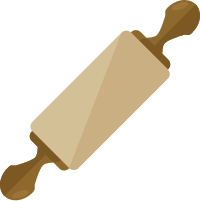

<!-- Fixed navbar -->
<nav class="navbar navbar-default navbar-fixed-top">
  <div class="container">
    <div class="navbar-header">
      <button type="button" class="navbar-toggle collapsed" data-toggle="collapse" data-target="#navbar" aria-expanded="false" aria-controls="navbar">
        <span class="sr-only">Toggle navigation</span>
        <span class="icon-bar"></span>
        <span class="icon-bar"></span>
        <span class="icon-bar"></span>
      </button>
      
      <a id="title" routerLink="/home">Bob's opskrifter</a>
    </div>
    <div id="navbar" class="navbar-collapse collapse">
      <ul class="nav navbar-nav navbar-right">
        <li><a routerLink="/home">Forside</a></li>
        <li><a routerLink="/recipes_home">Opskrifter</a></li>
        <li class="dropdown">
          <a href="#" class="dropdown-toggle" data-toggle="dropdown" role="button" aria-haspopup="true" aria-expanded="false">Bruger<span class="caret"></span></a>
          <ul class="dropdown-menu">
            <li><a href="#">Mine opskrifter</a></li>
            <li><a routerLink="/recipe_form">Tilføj opskrift</a></li>
          </ul>
        </li>
        <li><a routerLink="/blog">Blog</a></li>
        <li><a href="#">Log ind</a></li>
        <li><a href="#">Opret bruger</a></li>
      </ul>
    </div><!--/.nav-collapse -->
  </div>
</nav>

<router-outlet></router-outlet>
